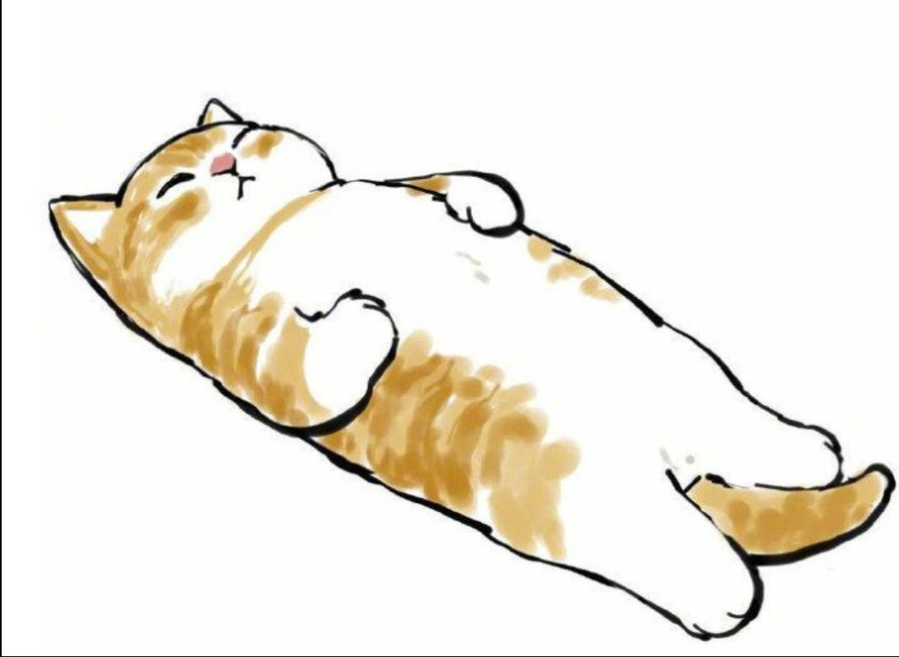

<!DOCTYPE html>
<html lang class="loading">
<head><meta name="generator" content="Hexo 3.9.0">
    <meta charset="UTF-8">
    <meta http-equiv="X-UA-Compatible" content="IE=edge,chrome=1">
    <meta name="viewport" content="width=device-width, minimum-scale=1.0, maximum-scale=1.0, user-scalable=no">
    <title>想躺平了 - 彪哥的生活</title>
    <meta name="apple-mobile-web-app-capable" content="yes">
    <meta name="apple-mobile-web-app-status-bar-style" content="black-translucent">
    <meta name="google" content="notranslate">
    <meta name="keywords" content="彪哥,"> 
    <meta name="description" content="&amp;nbsp;&amp;nbsp;&amp;nbsp;&amp;nbsp;若人生的时间可能完全自己撑控那该多好，世界上90%的工作都是在浪费时间和生命。在社会上漂泊大概有7年时间了，做为一个普通人这些年一事无成确实难为情，周,"> 
    <meta name="author" content="GongBiao"> 
    <link rel="alternative" href="atom.xml" title="彪哥的生活" type="application/atom+xml"> 
    <link rel="icon" href="/img/favicon.png"> 
    <link rel="stylesheet" href="//cdn.jsdelivr.net/npm/gitalk@1/dist/gitalk.css">
    <link rel="stylesheet" href="/css/diaspora.css">
    <script async src="//pagead2.googlesyndication.com/pagead/js/adsbygoogle.js"></script>
    <script>
         (adsbygoogle = window.adsbygoogle || []).push({
              google_ad_client: "ca-pub-8691406134231910",
              enable_page_level_ads: true
         });
    </script>
    <script async custom-element="amp-auto-ads" src="https://cdn.ampproject.org/v0/amp-auto-ads-0.1.js">
    </script>
</head>
</html>
<body class="loading">
    <span id="config-title" style="display:none">彪哥的生活</span>
    <div id="loader"></div>
    <div id="single">
    <div id="top" style="display: block;">
    <div class="bar" style="width: 0;"></div>
    <a class="icon-home image-icon" href="javascript:;" data-url="https://flymic.com"></a>
    <div title="播放/暂停" class="icon-play"></div>
    <h3 class="subtitle">想躺平了</h3>
    <div class="social">
        <!--<div class="like-icon">-->
            <!--<a href="javascript:;" class="likeThis active"><span class="icon-like"></span><span class="count">76</span></a>-->
        <!--</div>-->
        <div>
            <div class="share">
                <a title="获取二维码" class="icon-scan" href="javascript:;"></a>
            </div>
            <div id="qr"></div>
        </div>
    </div>
    <div class="scrollbar"></div>
</div>

    <div class="section">
        <div class="article">
    <div class='main'>
        <h1 class="title">想躺平了</h1>
        <div class="stuff">
            <span>十一月 14, 2021</span>
            

        </div>
        <div class="content markdown">
            <p><br>&nbsp;&nbsp;&nbsp;&nbsp;若人生的时间可能完全自己撑控那该多好，世界上90%的工作都是在浪费时间和生命。在社会上漂泊大概有7年时间了，做为一个普通人这些年一事无成确实难为情，周圈的人都成家立业了，也许这就有社会的阶级行成了，其实都它一直都存在，只是我们没有留意而已。想要有一种新的活法却像被什么东西束缚着，想自由想无忧无虑的生活。<br><br></p>
<p>&nbsp;&nbsp;&nbsp;&nbsp;最近工作节奏慢下来，我慢慢的思考这一切到才为了啥，一年又一年，有一天干不动时被优化掉，那自己的人生又应该向什么方向去出发呢？我们完成出卖时间的工作，一年的时间又是那么短，翻起近一年的照片，仿佛在昨日但那些人又走远了，没有什么感情是可以永恒不变的，我在想也许这就是大自然的选择吧，但你在低谷的时候，什么牛马蛇神都远离你。一些生活照片是删掉还留着呢？内心很矛盾，哎~ 过去的就让它过去吧，曾经我以为可以向普通人一样的路线去走结婚成家的路线，后来才发现，想多了还没有资格去过他们一样的路线生活。这种从小时候就一直在的贫穷和自卑感一直到现在。<br><br></p>
<p>&nbsp;&nbsp;&nbsp;&nbsp;这么多年我似乎一直在原地踏步，我在成都这个城市真的累了，我对这个城市的印象一直是那种如第一次来成都的感觉，阴沉沉的缺少阳光。我可能再在这个城市再奋斗个5个也买不起一套房子的首付，以至于我现在对这个城市都有一种麻木的感觉。不过我也慢慢的和自己妥协，从原来的在成都买小户型到郊区，再到十八线城市买个能住的地方。我现在只想“躺平”。我也准备着下一步的计划，做好资本家说你明天不用来了，也能活下去的生活预备。现在都说“内卷”去年找工作的时候我是真的感觉到了卷，工作经验有，但学历你卷不过人家。慢慢有了一些主观的见解，认识到我们从一毕业就被格式化去社会埋头工作。总结“成都没有幸福感，成都没有爱情”，譬如朝露，去日苦多。</p>
<br>

<p>&nbsp;&nbsp;&nbsp;&nbsp;2021年又年底了，看着这年复一年没有任何变化的生活，开始想着如果再坏一点，未来的日子要如何去度过呢？我还真有想过近两年的生活，如果有幸再打两年工没有被优化掉，我若能在十八线城市雅安买一个房子，然后就定下来。安心做点自己的小事业呢？30多岁找不到老婆也算正常，我慢慢的接受自己，努力去守着这份平凡。既然都不能像正常人一样墨守成规路径走，那就追随梦想吧，有个目标向北极星一样，无论成败，也许这就是人生的意义吧。</p>
<br>

<p>&nbsp;&nbsp;&nbsp;&nbsp;成都年底疫情又反反复复，不能出骑行远了，这感觉真的挺压抑的。特别是在家里没有一个人陪你说话 ，坐久了想出去活动一下的时候又不能去，真的难受。愿疫情早日过去，这年头活着就已经很不容易了，若我死不了，那些打击不死我的东西会让我更坚强。</p>
<br>
            <!--[if lt IE 9]><script>document.createElement('audio');</script><![endif]-->
            <audio id="audio" loop="1" preload="auto" controls="controls" data-autoplay="false">
                <source type="audio/mpeg" src="">
            </audio>
            
                <ul id="audio-list" style="display:none">
                    
                        
                            <li title='0' data-url='http://link.hhtjim.com/163/5146554.mp3'></li>
                        
                    
                        
                            <li title='1' data-url='http://link.hhtjim.com/qq/001faIUs4M2zna.mp3'></li>
                        
                    
                </ul>
            
        </div>
        
    <div id='gitalk-container' class="comment link"
        data-ae='false'
        data-ci=''
        data-cs=''
        data-r=''
        data-o=''
        data-a=''
        data-d='false'
    >查看评论</div>


    </div>
    
</div>


    </div>
</div>
</body>
<script src="//cdn.jsdelivr.net/npm/gitalk@1/dist/gitalk.min.js"></script>
<script src="//lib.baomitu.com/jquery/1.8.3/jquery.min.js"></script>
<script src="/js/plugin.js"></script>
<script src="/js/diaspora.js"></script>
<link rel="stylesheet" href="/photoswipe/photoswipe.css">
<link rel="stylesheet" href="/photoswipe/default-skin/default-skin.css">
<script src="/photoswipe/photoswipe.min.js"></script>
<script src="/photoswipe/photoswipe-ui-default.min.js"></script>

<!-- Root element of PhotoSwipe. Must have class pswp. -->
<div class="pswp" tabindex="-1" role="dialog" aria-hidden="true">
    <!-- Background of PhotoSwipe. 
         It's a separate element as animating opacity is faster than rgba(). -->
    <div class="pswp__bg"></div>
    <!-- Slides wrapper with overflow:hidden. -->
    <div class="pswp__scroll-wrap">
        <!-- Container that holds slides. 
            PhotoSwipe keeps only 3 of them in the DOM to save memory.
            Don't modify these 3 pswp__item elements, data is added later on. -->
        <div class="pswp__container">
            <div class="pswp__item"></div>
            <div class="pswp__item"></div>
            <div class="pswp__item"></div>
        </div>
        <!-- Default (PhotoSwipeUI_Default) interface on top of sliding area. Can be changed. -->
        <div class="pswp__ui pswp__ui--hidden">
            <div class="pswp__top-bar">
                <!--  Controls are self-explanatory. Order can be changed. -->
                <div class="pswp__counter"></div>
                <button class="pswp__button pswp__button--close" title="Close (Esc)"></button>
                <button class="pswp__button pswp__button--share" title="Share"></button>
                <button class="pswp__button pswp__button--fs" title="Toggle fullscreen"></button>
                <button class="pswp__button pswp__button--zoom" title="Zoom in/out"></button>
                <!-- Preloader demo http://codepen.io/dimsemenov/pen/yyBWoR -->
                <!-- element will get class pswp__preloader--active when preloader is running -->
                <div class="pswp__preloader">
                    <div class="pswp__preloader__icn">
                      <div class="pswp__preloader__cut">
                        <div class="pswp__preloader__donut"></div>
                      </div>
                    </div>
                </div>
            </div>
            <div class="pswp__share-modal pswp__share-modal--hidden pswp__single-tap">
                <div class="pswp__share-tooltip"></div> 
            </div>
            <button class="pswp__button pswp__button--arrow--left" title="Previous (arrow left)">
            </button>
            <button class="pswp__button pswp__button--arrow--right" title="Next (arrow right)">
            </button>
            <div class="pswp__caption">
                <div class="pswp__caption__center"></div>
            </div>
        </div>
    </div>
</div>


</html>
